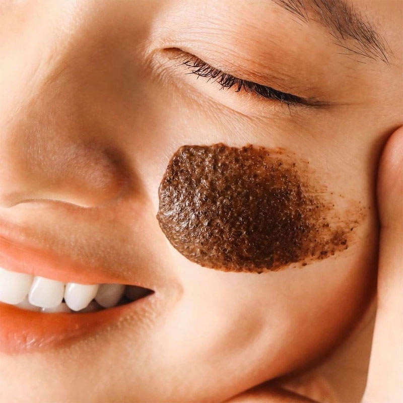

Tẩy Da Chết Mặt Cocoon Cà Phê Đắk Lắk
120.000 ₫
Giá thị trường: 180.000 ₫ - Tiết kiệm: 60.000 ₫ (33%)
Dung tích: 150ml
Bạn muốn nhận hàng trước 16h hôm nay (Miễn phí). Đặt hàng trong 30 phút tới và chọn giao hàng 2H ở bước thanh toán.
Mô tả sản phẩm
Tẩy Da Chết Mặt Cocoon Cà Phê Đắk Lắk 150ml là sản phẩm tẩy tế bào chết đến từ thương hiệu mỹ phẩm Cocoon Việt Nam. Sản phẩm sử dụng hạt cà phê Đắk Lắk xay nhuyễn kết hợp với bơ cacao giúp loại bỏ lớp tế bào chết, làm sạch da và mang lại làn da mềm mịn, tươi sáng.
- 150ml (Full size)
- Kết cấu dạng scrub cà phê

Sản phẩm phù hợp với loại da nào?
- Phù hợp với mọi loại da.
- Đặc biệt thích hợp cho da xỉn màu và da sần sùi.
Đối tượng sử dụng:
- Da cần tẩy tế bào chết định kỳ.
- Da thô ráp, sần sùi.
- Da cần làm sạch và sáng hơn.
Ưu điểm nổi bật:
- Hạt cà phê Đắk Lắk giúp tẩy tế bào chết hiệu quả.
- Bơ cacao giúp dưỡng ẩm và làm mềm da.
- Vitamin E giúp chống oxy hóa.
- Không chứa cồn, paraben hay vi hạt nhựa.
Thông số sản phẩm
| Barcode | 8936211230603 |
| Thương Hiệu | Cocoon |
| Xuất xứ thương hiệu | Việt Nam |
| Nơi sản xuất | Việt Nam |
| Loại da | Mọi loại da |
| Đặc tính | Tẩy tế bào chết, làm mềm và sáng da |
Hỗ trợ khách hàng
Hotline: 0845628919
(Miễn phí 08-22h kể cả T7, CN)
Hướng dẫn đặt hàng
Phương thức thanh toán
Chính sách đổi trả
Cập nhật khuyến mãi
DANH MỤC SẢN PHẨM
Mỹ phẩm High-End
Chăm sóc cá nhân
Băng vệ sinh
Khử mùi
Nước hoa
Nước hoa nữ
Nước hoa nam